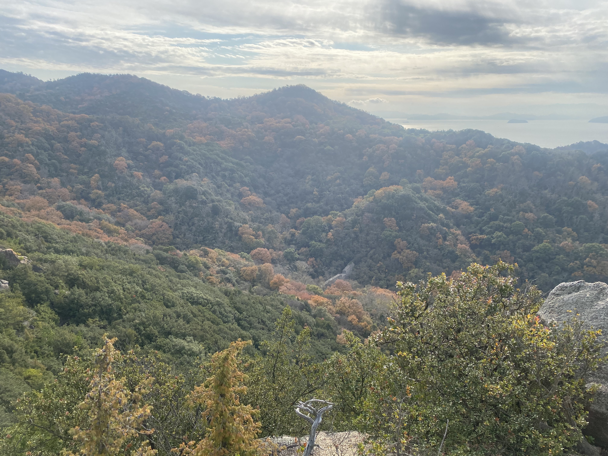

移動手段のおすすめ
移動手段のおすすめは原付！
山道狭いし、すぐ止めれるし、気持ちがいいよ！
島内で原付借りれるので是非借りてね(予約必須)

0日目
神戸港からフェリー乗車
25際以下だと1800円で片道乗船が可能！（✳︎深夜便、土日便は各々＋500円）
あとは船内の様子
12月に乗船したのでクリスマス仕様🎄
お風呂もサウナもあっていい感じ♪
1日目
重岩(かさねいわ)

こりゃまた長い階段が出現。
この先に「重ね岩」とやらがあるらしい。
なんでこんなところに岩があるんだろう・・・？
人工？天然？？
どうも分かんないみたい。
岩の感想はそれだけ・・・・
感動したのはとにかく景色！！！

とにかく綺麗。
島ならではの海と森。しかも僅かに紅葉。
完璧すぎないか？
朝9時くらいに登ったけど、最高のスタートダッシュだ。
エンジェルロード
エンジェルロード。
干潮の時だけ出てくる道。
ほんとかいな。
こんな広いのに干潮だけしか姿表さないとかある？
恋人と手を繋いで渡ると永遠の愛がうんたらかんたら。
こまめ食堂
こまめ食堂
棚田の前で食べるおにぎり定食。
対美味しいよね。
ビジュアルに惹かれすぎて来店。
大学生男が食べてかなり満足する量。
全部美味しかったけど、衝撃受けたのは醤油。
正直驚いた。
今まで使ってきた醤油とはわけが違う。
道の駅ふるさと村
道の駅ふるさと村。
これなんだと思う？
素麺だって。
こんなふうに作られてるんだね。
風でゆらゆらしててとても綺麗だった。
あと豆モビもあったよ。
どうも、2人乗りの原付で今小豆島で実証試験やってるんだって！！
めっちゃ可愛い！！
今度乗りに行くしかねぇ！
道の駅オリーブ園
道の駅オリーブ園。
ど定番の観光地だね。
2000本のオリーブ畑に囲まれた公園。
瀬戸内海を見下ろす丘にある白いギリシャ風車もあるよ。
夕陽も重なってとっても綺麗〜！！
お気に入り写真！！！！
今のSNSのトプ画にもなってるよ。
みんなも小豆島きたら絶対写真とってね！
一人で来るあなた向け！
三脚にもなる自撮り棒買えばなんでもできちゃうよ！

キッチンくいしんぼ
カウンターに色々な料理が置いてあって、そこから欲しいものを注文するスタイル。
20:00くらいに空いてる店がここしかなかったのもあって来店。
ここでの感想もこれ。
「小豆島の醤油うますぎんか？？」
本当に日本人の常識を変えていくような醤油が置いてある島、小豆島。
大好き。
SENゲストハウス

SENゲストハウス！！
おしゃれな木の板がお出迎え！
ゲストハウスといえばだよね。
今日の宿泊者たちで夕食会
札幌からきた自由に旅してる人と季節職でいろんな所で働いてる人と出会っていろんな話を聞いた。
生き方から小豆島情報までいろいろと
明日はおすすめされたところに行くぞ〜〜！！
こちらはお部屋からの景色！！
とっても綺麗だね:)
お部屋もとっても綺麗。
個室もあるから女性一人でも安心だよ！！
2日目
碁石山
碁石山。
現地の人しか知らないスポットだよ。
めっちゃ景色がいい〜〜〜！！！
マジで景色がいいのでアップでお届け！
小豆島最高！！
小豆島旅で一番感動したスポット。
是非是非是非是非行ってほしいスポット！！
写真はゲストハウスで知り合ったおばあちゃんと。
本当にここ道なのか？みたいなところも進んでいくよ。
安全対策は何もされていないから行く人はがんばってね！

寒霞渓

寒霞渓。
定番どころ。日本三大なんたら。
正直に言うよ。
景色は他の山(碁石山、銚子渓、西ノ滝)の方がいい！
定番を抑えるという意味では行ってもいいけど、めちゃオススメではない。
朝8:00に着いたのもあるけど人がいなくて写真も独り占め。
土曜日なのに！！
やったね！
ジャンプもできちゃう！
マルキン醤油記念館
醤油〜醤油〜。
資料館の入場400円。
え？高くない？と思ったけど課金。
そしたら醤油一本プレゼント！って言ってもらった。
クーポンもついてた。
とにかくホンモノの醤油はうまい。
そこら辺の醤油しか使ったことない人はぜひ取り寄せて一回使って欲しい。
もしくは俺の家舐めにきてほしい。本当うまい。
西の滝神社
西の滝神社。
ここも現地の方にお勧めされてきたところ。
いやここも本当いい。
景色めっちゃ綺麗。
小豆島景色全振り施設めちゃ多いな。
景色好きなわい、すっごいテンション上がってた。
最後の最後は岩に登る梯子があるよ。
梯子があるだけ碁石山より優しいけどやっぱり怖いね。
度胸試しもできる楽しいとこ
神社に続く長い道と、梯子登った先で見る景色。
馬鹿ってやっぱり高いところが大好きなんだよね〜(笑)

井上誠耕園
井上誠耕園(オリーブ屋)直営レストラン。
完熟エキストラバージンと未熟な若オリーブ(？)とかオリーブオイルの食べ比べができるのもいいところ。
あと窓側景色綺麗すぎでは？
オリーブ畑が一望できる。
めちゃいいお店だった。
オリーブオイルのお料理といえば、やっぱりアヒージョ。
めちゃ美味しかったパンもたくさん追加。
銚子渓
銚子渓。
ここも景色がいいんだなぁ。
本当にいいんだなぁぁ。
もう景色がいいパターン多すぎて言うことないけど。
えげつないめっちゃいい。

この写真の中には猿がたくさんいるよ。
見つけてみてね。
エンジェルロード~2nd season~
エンジェルロード。
本当に満潮になると道なくなるのかあまりにも信じられなかったので再来場。
本当になくなってた。
まじか。
海ってちょっと怖いね。って思った一時。
比較用前日写真。
すっげぇ。
神戸三宮フェリーターミナルに到着。
阪急三宮駅から
徒歩30分 バスで10分。
大きな駅すぐでとても便利。